컴퓨터활용능력-1급 (2009-10-18 기출문제)
1과목: 컴퓨터 일반
1. 다음 중 한글 Windows XP에서 [네트워크 설정 마법사]에 관한 설명으로 옳지 않은 것은?
- 네트워크 설정 마법사를 실행하려면 관리자 또는 Admini strators 그룹의 구성원으로 로그온 해야 한다.
- 네트워크를 이용하여 Windows 시스템의 자동 업데이트를 설정할 수 있다.
- 네트워크에 있는 모든 컴퓨터가 하나의 인터넷 연결을 사용하도록 구성한다.
- 파일 및 프린터 공유를 할 수 있다.
(정답률: 35%)

2. 다음 중 Windows XP의 [TCP/IP 등록정보]에 대한 설명 중 옳지 못한 것은?
- IP 주소는 인터넷에 연결된 호스트 컴퓨터의 유일한 주소로 네트워크 주소와 호스트 주소로 구성되며, 32bit 주소를 8비트씩 점(.)으로 구분한다.
- 서브네트 마스크는 IP 주소의 네트워크 주소와 호스트 주소를 구별하기 위해 IP 수신인에게 허용하는 32 비트 주소로, 사용자 컴퓨터가 속한 네트워크를 식별하는데 사용된다.
- 게이트웨이는 다른 네트워크와의 데이터 교환을 위한 출입구 역할을 하는 장치이다.
- 기본 설정 DNS 서버는 숫자 형태로 된 도메인 네임을 숫자로 된 IP주소로 변환해 주는 서버(DNS)의 도메인 이름을 지정한다.
(정답률: 44%)
3. 다음 중 한글 Windows XP에서 주기억장치의 메모리 용량 부족에 관한 문제해결 방법으로 옳지 않은 것은?
- 불필요한 프로그램은 종료한다.
- 부팅할 때 자동 실행되는 [시작 프로그램]에 설정된 불필요한 프로그램을 삭제하고 시스템을 다시 시작한다.
- [휴지통]이나 하드디스크의 임시 기억 장소에 저장된 불필요한 파일을 삭제한다.
- [시스템 등록 정보] 창에 있는 [고급] 탭에서 가상 메모리 크기를 조절한다.
(정답률: 38%)
4. 다음 중 정보통신과 관련하여 라우터(Router) 장치에 관한 설명으로 옳은 것은?
- 데이터 전송을 위해 최적의 경로 설정에 이용되는 통신 장비이다.
- 신호를 증폭하여 먼 거리로 정보를 전달할 때 사용하는 통신 장비이다.
- 주로 LAN에서 다른 네트워크에 데이터를 보내거나 다른 네트워크로부터 데이터를 받아들이는데 사용되는 통신 장비이다.
- OSI 참조 모델의 모든 계층을 포함하는 프로토콜 변환 기능을 가진 통신 장비이다.
(정답률: 61%)
5. 다음 중 Windows XP에서 사용되는 드라이버에 대한 설명으로 옳지 않은 것은?
- INF는 운영체제가 자동으로 인지하지 못하지만 참고해야 하는 하드웨어의 제조사나 제품의 이름, 사용 칩셋, 드라이버 제조 연월일, 모니터의 최대 수직주파수나 해상도, 모뎀의 사용하는 포트 등에 대한 정보를 가지고 있다.
- VxD는 가상 장치 제어기(Virtual Device Driver)로 하드웨어와 소프트웨어의 동작을 관리하며, 실행 시 필요한 메모리양만큼만 읽어 옴으로 일반 드라이버에 비해 메모리를 적게 차지한다.
- Windows에서는 [관리 도구]를 사용하여 하드웨어 장치의 드라이버를 업데이트하고, 하드웨어 설정을 변경할 수 있다.
- 드라이버의 업데이트 후에 시스템이 불안정하면 드라이버 롤백 기능을 이용해서 이전 드라이버로 되돌릴 수 있다.
(정답률: 40%)
6. 다음 중 멀티미디어와 관련하여 비트맵 방식의 이미지에 대한 설명으로 옳지 않은 것은?
- 이미지를 점들의 집합으로 표현하는 방식이다.
- 이미지를 확대할 때 안티 엘리어싱 처리를 해야 한다.
- 고해상도의 이미지를 표현하는데 적합한 방식이다.
- 이미지 데이터의 크기를 줄이면서 단순한 드로잉 이미지를 표현하기 적합한 방식이다.
(정답률: 53%)
7. 다음 중 네트워크의 통신망 구성 형태에 관한 설명으로 옳은 것은?
- 계층(Tree) 형태는 한 개의 통신 회선에 여러 대의 단말 장치가 연결되어 있는 형태로 설치가 용이하고 통신망의 가용성이 높다.
- 버스(Bus) 형태는 인접한 컴퓨터와 단말기를 서로 연결하여 양방향으로 데이터 전송이 가능한 형태로 단말기의 추가/제거 및 기밀 보호가 어렵다.
- 성(Star) 형태는 모든 단말기가 중앙 컴퓨터에 연결되어 있는 형태로 고장 발견이 쉽고 유지 보수가 용이하다.
- 링(Ring) 형태는 모든 지점의 컴퓨터의 단말 장치를 서로 연결한 상태로 응답 시간이 빠르고 노드의 연결성이 높다.
(정답률: 57%)
8. 다음 중 컴퓨터의 구성과 관련하여 레지스터(Register)에 관한 설명으로 옳지 않은 것은?
- 메모리 중에서 액세스 속도가 가장 빠르다.
- 일반적으로 플립플롭(Flip-Flop)이나 래치(Latch) 등을 연결하여 구성된다.
- CPU 내부에서 처리할 명령어나 연산의 중간 값 등을 일시적으로 저장하는 기억장치이다.
- 레지스터에 저장된 내용을 펌웨어라고 한다.
(정답률: 59%)
9. 다음 중 Windows XP에서 방화벽에 대한 설명으로 옳지 않은 것은?
- Windows의 방화벽은 내부로부터 다른 컴퓨터에 바이러스를 전파하지 못하도록 동작한다.
- 바이러스 백신은 방화벽 기능을 가지고 있지 않기 때문에 백신을 설치한 경우라도 방화벽은 필요하다.
- Windows의 방화벽은 특정 프로그램에 대하여 연결 차단을 해제하기 위해 예외를 둘 수 있다.
- Windows 방화벽은 사용자가 원할 경우 보안로그를 만들어 컴퓨터에 대한 성공한 연결 시도와 실패한 연결 시도를 기록한다.
(정답률: 77%)
10. 다음 중 개인용 컴퓨터의 바이오스(BIOS)에 관한 설명으로 옳지 않은 것은?
- 컴퓨터의 기본 입출력장치나 메모리 등 하드웨어 작동에 필요한 명령들을 모아 놓은 프로그램이다.
- 바이오스는 하드디스크에 저장되어 있는 운영체제의 일부이다.
- 바이오스는 부팅할 때 POST를 통해 컴퓨터를 점검한 후에 사용 가능한 장치를 초기화한다.
- 하드디스크 타임이나 부팅순서와 같이 바이오스에서 사용하는 일부 정보는 CMOS에서 설정이 가능하다.
(정답률: 43%)
11. 다음 중 한글 Windows XP의 레지스트리에 대한 설명으로 옳지 않은 것은?
- 레지스트리 편집기 실행은 [내 컴퓨터] 주소창에 'Regedit'를 입력하고 [Enter]를 누른다.
- 레지스트리는 IRQ, I/O주소, DMA 등과 같은 하드웨어 지원과 프로그램 실행 정보와 같은 소프트웨어 자원을 관리한다.
- 사용자 프로필과 관련된 부분은 'ntuser.dat' 파일에 저장된다.
- Windows를 동작시키고 응용프로그램을 실행하는데 필요한 각종 정보를 담고 있는 일종의 시스템 데이터베이스이다.
(정답률: 39%)
12. 다음 중 컴퓨터에서 정확한 자료 표현을 위한 에러 검출 방식에 관한 설명으로 옳지 않은 것은?
- 패리티 체크 비트 방식은 1비트의 패리티 비트를 추가하여 에러 검출할 수 있으나 교정은 불가능하다.
- 순환 중복 검사 방식은 블록 단위 데이터의 에러를 검출할 수 있으나 교정은 불가능하다.
- 해밍코드 방식은 에러검출과 교정이 가능한 코드로 2비트의 에러 검출 및 1비트의 에러 교정이 가능한 방식이다.
- 블록합 검사 방식은 패리티 검사 방식의 단점을 보완한 방식으로 프레임 내의 모든 문자의 같은 위치 비트들에 대한 패리티를 추가하여 블록의 맨 마지막에 추가 문자를 부가하는 방식이다.
(정답률: 44%)
13. 다음 중 인터넷 주소 체계인 IPv6(Internet Protocol version 6)에 관한 설명으로 옳지 않은 것은?
- 주소의 확장성, 융통성, 연동성이 향상되며 실시간 흐름 제어로 향상된 멀티미디어 기능을 제공할 수 있다.
- 실시간 흐름 제어로 향상된 멀티미디어 기능을 지원한다.
- 64 비트의 주소를 사용하여 IP 주소의 부족 문제를 해결할 수 있다.
- 인증성, 기밀성, 데이터 무결성의 지원으로 보안 문제를 해결할 수 있다.
(정답률: 76%)
14. 다음 중 한글 Windows XP의 [검색 결과] 창에 있는 [검색 도우미]에서 사용할 수 있는 파일의 검색 조건으로 옳지 않은 것은?
- 파일명이 'a' 문자로 시작하면서 확장자가 'exe'인 파일의 검색
- 파일의 특성이 읽기 전용으로 설정된 파일의 검색
- 2009년 1월 1일부터 2009년 2월 21일까지 수정된 파일의 검색
- 'test'를 포함하는 문장이 있는 파일의 검색
(정답률: 49%)
15. 다음 중 MPEG에 관한 설명으로 옳지 않은 것은?
- 1988년 설립된 동화상 전문가 그룹을 의미하는 Motion Picture Experts Group의 약자로 동영상을 압축하는 방법을 연구하고 표준안을 제정하고 있다.
- 현재 제정된 표준안으로 MPEG1, MPEG2, MPEG4, MPEG7, MPEG21 등이 있다.
- MPEG4는 멀티미디어 통신을 전제로 만들어진 영상 압축 기술로서 낮은 전송률로 동영상을 보내고자 개발된 데이터 압축과 복원 기술이다.
- MPEG7은 ISO 13818로 규격화된 영상 압축 기술로 디지털 TV, 대화형 TV, DVD 등은 높은 화질과 음질을 필요로 하는 분야의 압축 기술이다.
(정답률: 49%)
16. 다음 중 컴퓨터에서 사용하는 캐시 메모리에 관한 설명으로 옳은 것은?
- 중앙처리장치와 주기억장치 사이에 위치하여 컴퓨터의 처리속도를 향상시키는 역할을 한다.
- 캐시메모리는 접근속도가 빠른 DRAM을 사용한다.
- 보조기억장치의 일부를 주기억장치처럼 사용하는 메모리이다.
- 주기억장치의 용량보다 큰 프로그램을 로딩하여 실행시킬 경우에 사용된다.
(정답률: 69%)
17. 다음 중 한글 Windows XP의 [제어판]에 있는 [글꼴]에 관한 설명으로 옳지 않은 것은?
- [글꼴] 창에서는 시스템에 설치된 글꼴의 종류와 모양을 확인할 수 있다.
- [글꼴] 창의 내용이 실제로 위치하는 폴더는 C:＼Windows＼Fonts이다.
- [글꼴] 폴더에 있는 글꼴 파일명은 .ttc와 .ttf 형식의 확장자를 포함한다.
- [글꼴]은 [제어판]-[프로그램 추가/제거]를 이용하여 추가하거나 삭제할 수 있다.
(정답률: 70%)
18. 다음 중 Telnet 서비스에 관한 설명으로 옳은 것은?
- 인터넷을 통해 원격지에 있는 서버에 파일을 전송하기 위한 서비스이다.
- 네트워크를 통해 원격으로 컴퓨터를 연결하여 자신의 로컬 컴퓨터처럼 사용할 수 있도록 하는 서비스이다.
- 인터넷을 통해 홈페이지를 제공해 주는 서비스이다.
- 인터넷 상에서 메뉴 방식으로 구성된 정보 검색 서비스이다.
(정답률: 62%)
19. 다음 중 한글 Windows XP에서 설치 가능한 네트워크 구성 요소의 유형에 관한 설명으로 옳지 않은 것은?
- 어댑터는 네트워크상에 있는 컴퓨터들이 서로 통신할 수 있는 소프트웨어이다.
- 서비스는 파일 및 프린터 공유와 같은 기능을 제공한다.
- 프로토콜은 사용자 컴퓨터가 다른 컴퓨터와 통신할 때 사용하는 언어이다.
- 클라이언트는 사용자가 연결하는 네트워크에 있는 컴퓨터 및 파일 액세스를 제공한다.
(정답률: 46%)
20. 다음 중 컴퓨터에서 프로그램을 개발하기 위하여 사용되는 컴파일러 언어와 인터프리터 언어의 차이점으로 옳은 것은?
- 컴파일러 언어는 전체 번역 과정을 따로 거치지 않고 프로그램의 각 명령문을 행 단위로 번역하고 처리하는 방식을 사용한다.
- 인터프리터 언어는 목적 프로그램과 실행형 프로그램을 생성하며, 대표적으로 BASIC 언어가 있다.
- 컴파일러와 비교하여 인터프리터 언어는 대화식 처리가 가능하다.
- 컴파일러 언어는 인터프리터 언어와 비교하여 일반적으로 속도가 느리다.
(정답률: 40%)
2과목: 스프레드시트 일반
21. 다음은 차트에서 축에 관한 설명이다. 올바른 것은?
- 축의 제목은 수정할 수는 있지만 삭제할 수는 없다.
- 차트에서 보조 축으로 설정한 계열이 하나라도 있으면 이중 축 차트가 된다.
- Y(값) 축의 보조 축을 설정하면 차트의 왼쪽에 보조 축이 표시된다.
- 축의 제목은 각도를 조절하여 작성할 수 있다.
(정답률: 38%)
22. 다음 시트에서 배열수식을 이용하여 1학년 학생의 국어 평균을 구하려고 할 때 올바른 수식은?
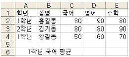
- {=AVERAGE(A2:A4="1학년",C2:C4)}
- {=AVERAGE(IF(A2:A4="1학년",C2:C4))}
- {=AVERAGE(IF(A2:A4=1학년,C2:C4))}
- {=IF(AVERAGE(A2:A4="1학년",C2:C4))}
(정답률: 69%)
23. 다음 중 공유 통합 문서에 대한 설명으로 옳지 않은 것은?
- 공유 통합 문서에서 변경 내용이 충돌할 경우는 변경 내용이 적용되지 않는다.
- 통합문서를 공유한 후에 데이터의 입력과 편집은 가능하나 조건부 서식, 차트, 시나리오, 부분합, 데이터 테이블, 피벗테이블 보고서, 매크로 등은 추가하거나 변경할 수 없다.
- 통합 문서 병합을 이용하여 공유된 통합 문서의 복사본을 원본과 합쳐 하나로 만들 수 있다.
- 공유 통합 문서는 저장할 때마다 마지막으로 저장한 이후 다른 사용자가 저장한 변경 내용으로 업데이트된다.
(정답률: 32%)
24. 다음 중 셀 서식에 대한 설명으로 옳지 않은 것은?
- 텍스트의 방향은 -90에서 90의 범위 내에서 설정이 가능하다.
- 문자열의 길이가 길어 하나의 셀 안에 표시되지 않을 경우 글자 길이에 맞춰 셀의 열 너비가 자동으로 조절되게 설정할 수 있다.
- 특정 위치에서 텍스트의 줄을 바꾸려면 줄을 바꿀 위치를 클릭한 다음 [Alt]+[Enter]를 누른다.
- 사용자가 자주 사용하는 서식은 별도로 저장해 둘 수 있다.
(정답률: 32%)
25. 아래의 시트에서 [A2:A7]은 '이름'으로 [B2:B7]은 '고객구분'으로 [D2:D7]은 '구입금액'으로 영역의 이름이 정의되었을 때 고객구분이 정회원이면서 지역이 인천인 회원 수를 구하는 수식으로 옳은 것은?(문제오류로 실제 시험장에서는 모두 정답 처리 하였습니다. 여기서는 4번을 정답처리 합니다.)
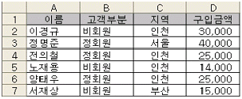
- =COUNTA(고객구분="정회원")*(지역="인천"))
- =COUNTIF(고객구분="정회원")*(지역="인천"))
- =COUNT(고객구분="정회원")*(지역="인천"))
- =SUMPRODUCT(고객구분="정회원")*(지역="인천"))
(정답률: 63%)
26. 다음 프로시저를 실행한 결과에 대한 설명으로 옳은 것은?
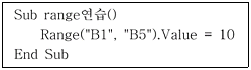
- [B1] 셀에서 [B5] 셀까지 모든 셀에 10을 입력한다.
- [B1] 셀과 [B5] 셀에 10을 입력한다.
- 1행에서 5행까지의 모든 셀에 10을 입력한다.
- 오류가 발생한다.
(정답률: 49%)
27. 다음 중에서 양식 도구 모음 컨트롤에 대한 설명으로 바르지 않은 것은?
- : 스크롤 화살표 키를 클릭하거나 스크롤 상자를 끌어서 값 범위를 스크롤한다. 스크롤 상자와 스크롤 화살표 키 사이를 클릭하면 한 페이지씩 이동할 수 있다.
- : 옵션을 설정하거나 해제한다. 시트나 그룹에서 동시에 여러 개의 항목을 선택할 수 있다.
- : 그룹상자에 포함된 옵션그룹 중 하나를 선택한다. 몇 가지 항목 중 하나만 선택할 수 있게 하려는 경우에 사용한다.
- : 컨트롤이나 워크시트 또는 양식에 대한 정보를 제공하는 텍스트이다.
(정답률: 63%)
28. 다음 중 나이 구간별 인원수를 알기 위하여 [E2:E5] 셀에 사용할 함수로 옳은 것은?
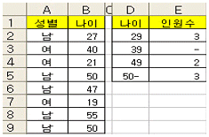
- COUNT
- FREQUENCY
- COUNTA
- DSUM
(정답률: 39%)
29. 다음 중 매크로에 대한 설명으로 옳지 않은 것은?
- AcitveCell.Interior.Bold=true ⇒ 활성 셀의 글꼴을 '굵게'로 설정
- Worksheets.Add ⇒ 새로운 워크시트를 삽입
- Range("A5").Select ⇒ A5셀로 셀 포인터 이동
- Range("A1").Formula="=3*4" ⇒ A1셀에 3*4가 계산된 결과인 12를 입력
(정답률: 29%)
30. 아래와 같이 MySheet의 [A1:A10]의 각 셀 값의 총합을 메시지 상자로 나타나도록 하기 위해 밑줄(_) 부분에 입력할 내용을 순서대로 바르게 나열한 것은?
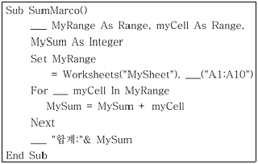
- Private, Range, Case, MsgBox
- Dim, Range, Each, MsgBox
- Private, Cell, Case, InBox
- Dim, Cell, Each, InBox
(정답률: 43%)
31. 다음 중 꺾은 선형 차트에서 꺾은선의 색상이나 표식의 스타일을 변경하기 위한 단축 메뉴로 옳은 것은?
- 데이터 계열 서식
- 차트 종류
- 원본 데이터
- 추세선 추가
(정답률: 55%)
32. 다음 중 [외부 데이터 가져오기]를 통하여 읽어 들일 수 없는 데이터는 무엇인가?
- Microsoft Access 파일의 테이블에 저장된 데이터
- 쿼리에서 만들어진 질의에 대한 결과 데이터
- Microsoft Word 파일에 저장된 표 데이터
- 일정한 너비나 기호로 구분된 텍스트 형식의 파일에 저장된 데이터
(정답률: 51%)
33. 다음 시트와 같이 이름에 '원'이라는 글자가 포함된 셀을 노란색으로 무늬를 변경하려고 할 때 조건부 서식의 수식으로 옳은 것은?
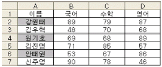
- =COUNT(A2,"*원*")
- =COUNT(A2:A7,"*원*")
- =COUNTIF(A2,"*원*")
- =COUNTIF(A2:A7,"*원*")
(정답률: 26%)
34. 다음 중 [창 정렬]을 통해 배열된 다른 엑셀 통합 문서로 작업 화면을 전환할 때 사용되는 바로가기 키로 옳은 것은?
- [Shift]+[Tab]
- [Ctrl]+[Alt]+[Enter]
- [Ctrl]+[Enter]
- [Ctrl]+[Tab]
(정답률: 50%)
35. 다음 중 셀 범위에 이름을 작성하고 참조하는 작업에 관한 설명으로 틀린 것은?
- 셀 범위를 설정한 후 이름 상자에 작성할 이름을 입력하고 [Enter]를 누르면 이름이 지정된다.
- 이름은 숫자로 시작될 수 없으며, 공백을 포함할 수 없다.
- 이름을 지정한 후에 지정된 이름을 제거할 수 있다.
- [A1:A4] 영역의 점수를 '수학'으로 이름을 지정한 경우, '수학' 이름을 이용하여 '=수학+A5'와 같이 수식을 작성하면 A1셀부터 A5 셀까지의 합계가 구해진다.
(정답률: 48%)
36. 아래 그림과 같이 한 시트에 A4용지 네 페이지 분량의 자료가 있다. 이것을 A4용지 1장 내지 2장에 모두 인쇄하고자 할 때 [페이지 설정] 대화상자에서 사용할 수 있는 방법 중 올바르지 못한 것은?
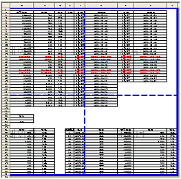
- 축소/확대 배율을 50%로 줄인다.
- 자동 맞춤을 선택하고 용지의 너비와 높이를 각각 1로 지정한다.
- 자동 맞춤을 선택하고 용지의 너비를 1로, 높이를 0으로 지정한다.
- 자동 맞춤을 선택하고 용지의 너비를 1로, 높이를 공란으로 지정한다.
(정답률: 34%)
37. 다음 중 피벗테이블 필드의 그룹 설정에 대한 설명으로 옳지 않은 것은?
- 그룹 만들기는 특정 필드를 일정한 단위로 묶어 표현할 때 사용하는 것으로 문자, 숫자, 날짜, 시간으로 된 필드에서 사용할 수 있다.
- 숫자 필드일 경우에는 '그룹화' 대화상자에서 시작, 끝, 단위를 지정해야 한다.
- 문자 필드일 경우에는 '그룹화' 대화상자에서 그룹 이름을 반드시 지정해 주어야 한다.
- 그룹을 해제하려면 그룹으로 설정된 영역의 바로 가기 메뉴에서 [그룹 해제]를 선택하여 실행할 수 있다.
(정답률: 49%)
38. 다음과 같이 [A7] 셀에 '=A4+A5'를 입력하여 결과를 확인한 후 5번째 행을 삭제했을 때 [A6] 셀(원래는 [A7])의 결과 값으로 옳은 것은?
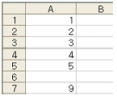
- 4
- #REF!
- #####
- #VALUE!
(정답률: 37%)
39. 고급 필터에서 조건을 다음과 같이 설정했을 때 이에 대한 설명으로 올바른 것은?
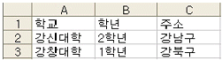
- 학교가 강신대학이거나 2학년이고 주소가 강남구이거나 학교가 강창대학이거나 1학년이고 주소가 강북구인 레코드
- 학교가 강신대학이면서 2학년이고 주소가 강남구이고 학교가 강창대학이면서 1학년이고 주소가 강북구인 레코드
- 학교가 강신대학이면서 2학년이고 주소가 강남구이거나 학교가 강창대학이면서 1학년이고 주소가 강북구인 레코드
- 학교가 강신대학이면서 2학년이거나 주소가 강남구이거나 학교가 강창대학이면서 1학년이거나 주소가 강북구인 레코드
(정답률: 60%)
40. 다음 중 워크시트에 입력된 도형만 제외하고 인쇄하려고 할 때의 방법으로 알맞은 것은?
- 입력된 도형을 선택한 후 [서식]-[도형]을 선택하고 [도형 서식] 대화상자의 '속성' 탭에서 '개체 인쇄'를 해제한 후 '확인'을 클릭한다.
- [파일]-[페이지 설정] 대화상자의 '시트' 탭에서 '흑백으로' 항목에 체크하고 '확인'을 클릭한다.
- [파일]-[페이지 설정] 대화상자의 '시트' 탭에서 '간단하게 인쇄' 항목에 체크하고 '확인'을 클릭한다.
- [파일]-[페이지 설정] 대화상자의 '시트' 탭에서 '시험출력' 항목에 체크하고 '확인'을 클릭한다.
(정답률: 47%)
3과목: 데이터베이스 일반
41. 다음 중 인덱스에 관한 설명으로 가장 옳지 않은 것은?
- 인덱스를 사용하면 레코드를 더 빨리 찾고 정렬할 수 있다.
- 테이블의 기본 키에는 자동으로 인덱스가 만들어진다.
- 다중 필드 인덱스는 최대 10개의 필드를 포함할 수 있다.
- 중복되는 값을 많이 가지고 있는 필드를 인덱스로 설정하면 검색속도가 향상된다.
(정답률: 45%)
42. 다음 중 보고서에서 페이지 번호를 "001", "002"와 같은 형식으로 인쇄하려고 할 때 올바른 것은?
- =[Page]&"/"&[Page]
- =Format([Page],"000")
- =[Page]&["000"]
- =Foramat([Page]&"/"&[000])
(정답률: 62%)
43. 다음 중 쿼리에서 사용하는 함수에 대한 설명으로 가장 옳지 않은 것은?
- select LCASE(상품명) from 출고 → 상품명에 있는 대문자를 모두 소문자로 변경하여 표시한다.
- select DATEDIFF("Y",5,DATE()) from 출고 → 출고일 필드에서 오늘 날짜까지 경과한 일(日) 수를 표시한다.
- select DATEADD("Y",5,DATE()) from 출고 → 오늘 날짜에서 5년을 더한 날짜를 표시한다.
- select count(*) from 출고 group by DATEPART("m",[입고일]) → 입고일을 월별로 그룹화하여 해당 레코드 개수를 표시한다.
(정답률: 35%)
44. 다음 중 폼이 열려 있는 동안 포커스를 계속 갖도록 하기 위해 설정해야 할 폼의 속성으로 올바른 것은?
- 모달
- 추가 기능
- 레코드 잠금
- 레코드 선택기
(정답률: 52%)
45. 다음 중 액세스에서 매크로에 대한 설명으로 옳지 않은 것은?
- 매크로 그룹 이름 다음에 점을 입력한 후 매크로 이름을 입력하여 이벤트나 이벤트 프로시저의 매크로 그룹에서 매크로를 실행할 수 있다.
- 하나의 매크로에 여러 개의 매크로 함수를 지정할 수 있다.
- 그룹으로 지정된 매크로를 실행시키면 가장 나중에 지정한 매크로만 실행된다.
- 특정 조건이 참일 때만 매크로 함수를 실행하도록 할 수 있다.
(정답률: 59%)
46. 다음 중 크로스탭 쿼리에 대한 설명으로 가장 옳지 않은 것은?
- 쿼리 결과를 Excel 워크시트와 비슷한 표 형태로 표시하는 특수한 형식의 쿼리이다.
- 맨 왼쪽에 세로로 표시되는 행 머리글과 맨 위에 가로 방향으로 표시되는 열 머리글로 구분하여 데이터를 그룹 화한다.
- 그룹화한 데이터에 대해 레코드 개수, 합계, 평균 등을 계산할 수 있다.
- 열 머리글로 사용될 필드는 여러 개를 지정할 수 있지만 행 머리글로 사용할 필드는 하나만 지정한다.
(정답률: 63%)
47. 다음 중 폼이나 컨트롤이 포커스를 잃을 때 발생하는 이벤트로 옳은 것은?
- Focus
- LostFocus
- Enter
- Activate
(정답률: 69%)
48. 다음 중 데이터베이스의 정규화에 관한 설명으로 가장 옳지 않은 것은?
- 테이블의 정규화는 불필요한 필드를 제거함으로써 데이터 공간의 낭비를 방지하기 위한 것이다.
- 이해하기 쉽고 확장하기 쉽도록 테이블을 구성하며, 무결성 제약 조건의 구현을 용이하게 한다.
- 정규화는 여러 테이블에 중복적으로 존재하는 필드를 일정한 규칙에 의해 추출하여 보다 단순한 형태를 가지는 다수의 테이블로 분리하는 작업이다.
- 정규화를 수행해도 데이터의 중복을 최소화 하는 것이지 완전히 제거할 수 있는 것은 아니다.
(정답률: 37%)
49. 다음의 관계에 관한 설명으로 가장 옳지 않은 것은?
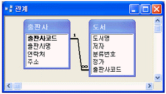
- [출판사] 테이블의 데이터를 수정하거나 삭제하는 경우, 참조 무결성이 위배될 수 있다.
- [도서] 테이블의 레코드를 삭제하는 경우, 어떤 경우에도 참조 무결성에 위배되지 않는다.
- [도서] 테이블에 레코드를 추가하는 경우, 참조 무결성이 위배될 수 있다.
- [출판사] 테이블에 레코드를 추가하는 경우, 참조 무결성이 위배될 수 있다.
(정답률: 30%)
50. 다음 중 [학생] 테이블에서 '학년' 필드가 2인 레코드의 개수를 계산하고자 할 때 가장 옳은 것은? 단, [학생] 테이블의 '학번' 필드는 기본 키이다.
- dlookup(*,학생,학년=2)
- dcount("*","학생","학년=2")
- dlookup("*","학생","학년=2")
- dcount(학번,학생,학년=2)
(정답률: 56%)
51. 다음은 데이터베이스에 관한 설명이다. 옳지 않은 것은?
- 데이터베이스란 여러 응용 시스템들이 공유할 수 있도록 통합, 저장되어 운용되는 데이터 집합을 말한다.
- 데이터베이스 모델의 종류에는 계층형, 네트워크형, 관계형 등이 있다.
- 데이터베이스를 생성하거나 수정하는데 사용되는 데이터베이스 언어를 데이터 제어어(DCL)라 한다.
- 데이터베이스 관리자는 데이터베이스 시스템을 총체적으로 감시, 관리하는 책임과 권한을 갖는 사람 또는 그룹이다.
(정답률: 61%)
52. 다음 중 액세스에서 보고서 작성시 '그룹화'에 대한 설명으로 가장 옳지 않은 것은?
- 두 개 이상의 필드나 식에서 그룹화하면 첫 번째 필드만 적용된다.
- 특정 필드를 기준으로 그룹화를 하는 경우 데이터는 그 필드를 기준으로 정렬되어 표시된다.
- 그룹을 만들려면 그룹 머리글이나 그룹 바닥글 중 하나 이상을 설정해야 한다.
- 그룹을 시작하는 값 또는 값의 범위를 설정할 수 있으며 그룹화 할 필드의 데이터 형식에 따라 옵션이 다르다.
(정답률: 44%)
53. [재학생] 테이블과 [졸업생] 테이블은 모두 '학번', '이름', '전화번호' 필드로 구성되어 있다. 다음 중 두 테이블의 레코드를 통합하여 나타내려고 할 때 쿼리문으로 올바른 것은?
- Select 학번, 이름, 전화번호 From 재학생, 졸업생 Where 재학생.학번=졸업생.학번;
- Select 학번, 이름, 전화번호 From 재학생 JOIN Select 학번, 이름, 전화번호 From 졸업생;
- Select 학번, 이름, 전화번호 From 재학생 OR Select 학번, 이름, 전화번호 From 졸업생;
- Select 학번, 이름, 전화번호 From 재학생 UNION Select 학번, 이름, 전화번호 From 졸업생;
(정답률: 53%)
54. 프로시저는 연산을 수행하거나 값을 계산하는 일련의 명령문과 메서드로 구성된다. 다음 예제 중 메서드에 해당되는 것은?
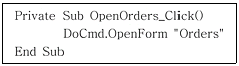
- OpenOrders
- DoCmd
- OpenForm
- Orders
(정답률: 40%)
55. [주문] 테이블은 주문번호, 고객번호, 제품번호, 주문수량의 4개의 필드로 구성되어 있다. [주문] 테이블에서 2번 이상 주문한 고객에 대한 '고객번호'별 고객번호, 주문횟수, 주문수량의 총계를 검색하는 SQL 문장은 어느 것인가?
- SELECT 고객번호, Count(주문번호), Sum(주문수량) FROM 주문 GROUP BY 고객번호 HAVING Count(고객번호)>=2;
- SELECT 고객번호, Count(주문번호), Sum(주문수량) FROM 주문 WHERE Count(고객번호)>=2 GROUP BY 고객번호;
- SELECT 고객번호, Count(주문번호), Sum(주문수량) FROM 주문 WHERE Count(고객번호)>=2;
- SELECT 고객번호, Sum(주문번호), Count(주문수량) FROM 주문 GROUP BY 고객번호 HAVING Count(고객번호)>=2;
(정답률: 37%)
56. 다음 중 테이블 연결을 통해 연결된 테이블과 가져오기 기능을 통해 생성된 테이블과의 차이점에 대한 설명으로 옳지 않은 것은?
- 연결된 테이블의 데이터를 삭제하면 연결되어 있는 원본 데이터베이스의 데이터도 삭제된다.
- 연결된 테이블을 삭제해도 원본테이블은 삭제되지 않는다.
- 가져오기 기능을 통해 생성된 테이블을 삭제해도 원본 테이블은 삭제되지 않는다.
- 연결된 테이블을 이용하여 폼이나 보고서를 생성할 수 있다.
(정답률: 65%)
57. 다음 중 테이블 작성 시 필드의 크기를 지정할 수 있는 데이터 형식은 무엇인가?
- 메모
- 텍스트
- 날짜/시간
- 하이퍼링크
(정답률: 51%)
58. 다음 보고서는 전체 64페이지 중의 17번째 페이지이다. 이 보고서에 대한 설명으로 가장 옳지 않은 것은?
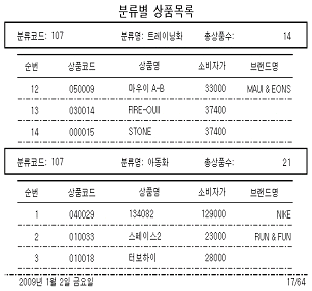
- ‘분류코드’나 ‘분류명’을 기준으로 그룹화하고, 그룹 머리글 영역을 만들었다.
- ‘브랜드명’ 필드를 표시하는 컨트롤은 ‘중복내용 숨기기’ 속성을 ‘예’로 설정하였다.
- ‘분류코드’ 바닥글 영역은 ‘반복 실행 구역’ 속성을 ‘예’로 설정하였다.
- ‘분류별 상품목록’이라는 제목은 ‘페이지 머리글’에 만들었다.
(정답률: 50%)
59. 다음은 폼에서의 컨트롤 작업에 대한 설명이다. 이 중 가장 옳지 않은 것은?
- 레이블이나 명령 단추 등의 컨트롤은 특정 필드에 바운드 시킬 수 없다.
- 하나의 필드를 여러 개의 컨트롤에 바운드 시킬 수 없다.
- 필드 목록에서 특정 필드 이름을 끌어와 폼에 드롭 시키면 자동적으로 해당 필드에 바운드된다.
- 컨트롤 원본을 ‘=’로 시작되는 계산식으로 지정한 컨트롤에는 사용자가 값을 입력할 수 없다.
(정답률: 43%)
60. 다음 중 액세스의 내보내기(Export)에 대한 설명으로 가장 옳지 않은 것은?
- 테이블이나 쿼리, 폼이나 보고서 등을 다른 형식으로 바꾸어 파일로 저장할 수 있다.
- 한 번에 한 개체만 내보낼 수 있다.
- 쿼리를 엑셀이나 HTML 형식으로 변환하여 저장하는 경우, 쿼리의 SQL 문이 아니라 실행 결과가 저장된다.
- 테이블은 내보내지 않고 보고서만 ‘서식 있는 텍스트 파일(*.rtf)’로 내보내는 경우 원본 테이블이 없어서 데이터는 표시되지 않는다.
(정답률: 43%)
이유: 네트워크 설정 마법사는 네트워크 연결 설정과 관련된 기능을 제공합니다. 따라서 "네트워크를 이용하여 Windows 시스템의 자동 업데이트를 설정할 수 있다."는 옳은 설명입니다. 하지만 "네트워크에 있는 모든 컴퓨터가 하나의 인터넷 연결을 사용하도록 구성한다."는 옳지 않은 설명입니다. 네트워크 설정 마법사는 인터넷 연결 설정과는 관련이 없습니다.